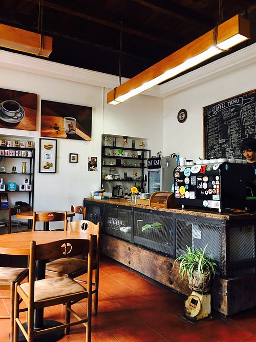
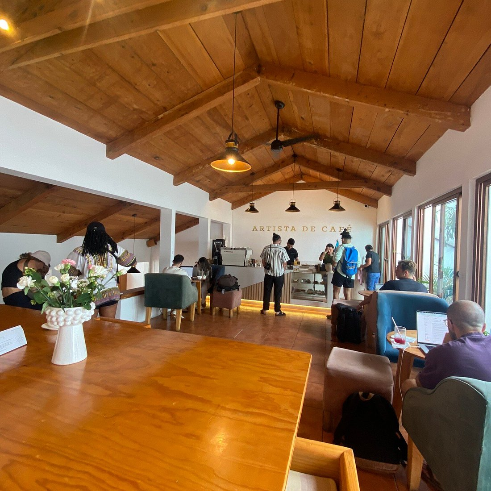
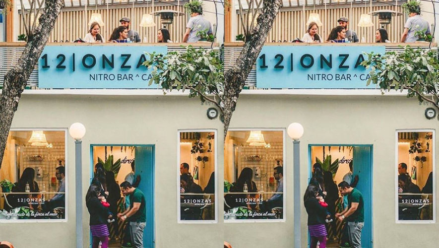
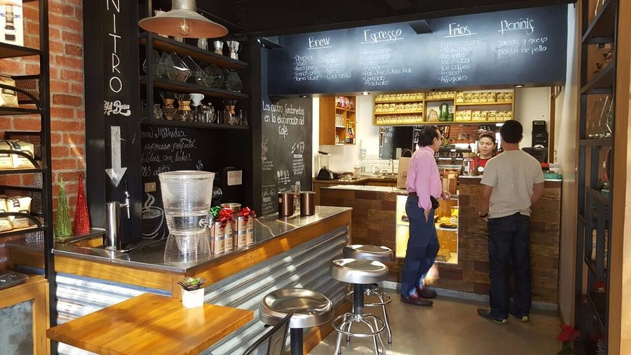
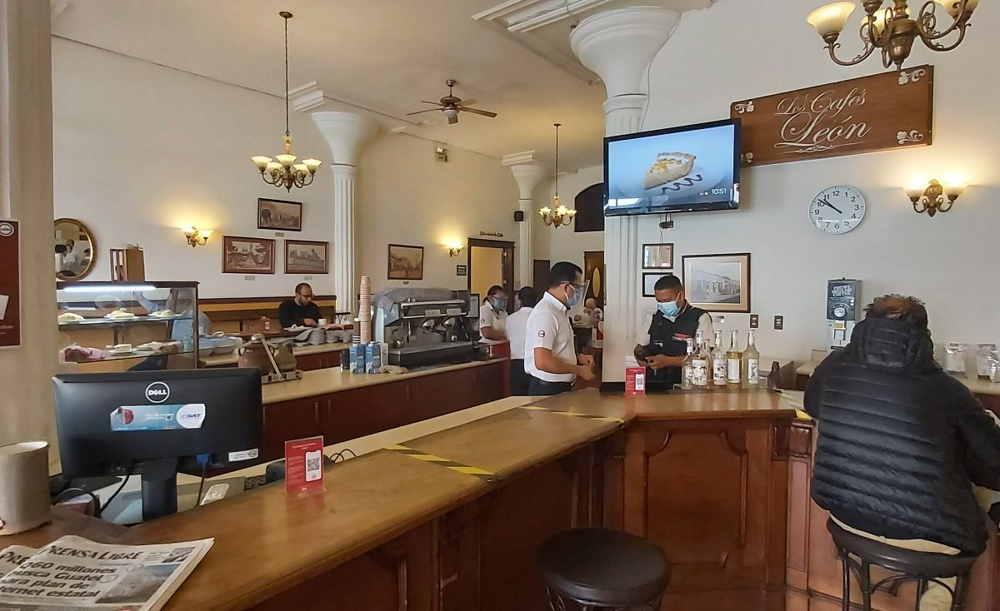

Descubre algunos de los cafés más famosos, modernos y visitados de Guatemala.

Cafetería moderna muy reconocida por su ambiente relajado, café premium y diseño elegante.

Café artesanal famoso por su calidad guatemalteca y ambiente acogedor.

Espacio moderno ideal para estudiar, trabajar y disfrutar café premium.

Cafetería reconocida internacionalmente por la calidad de su café guatemalteco y por ofrecer una experiencia especializada para amantes del café.

Uno de los cafés más tradicionales de Guatemala, reconocido por su historia y por ofrecer café de alta calidad desde hace décadas.